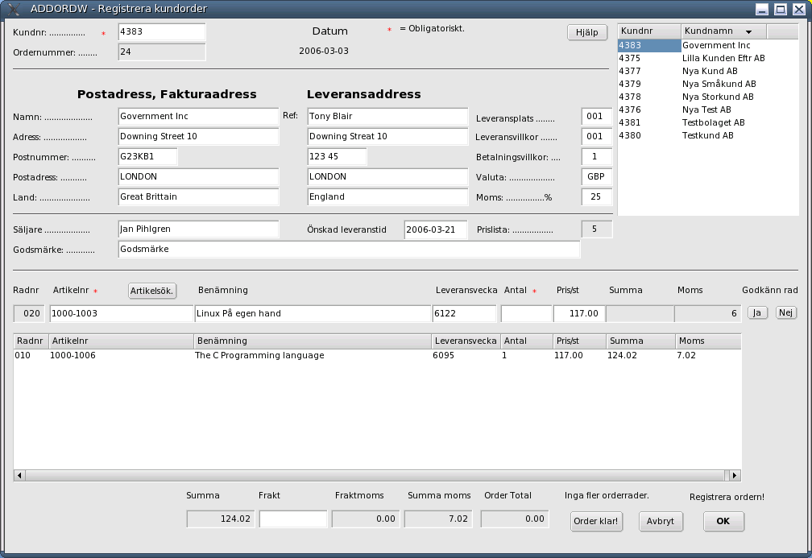

Order/Lager/Fakturering för Linuxsystem
Användarmanual
Kapitel Försäljning
Version 0.45
2006-02-01
This program is free software; you can
redistribute it and/or modify
it under the terms of the GNU
General Public License as published by
the Free Software
Foundation; either version 2 of the License, or
(at your option)
any later version.
Copyright 2004 Jan Pihlgren.
Registrering av nya kunder Ändra kunddata Registrering av kundorder Utskrift av plocklista. Registrera plockat antal. Fakturera. Lista kundorder. Registrera betalda fakturor. Registrering av standardleveransplats
Begreppsförklaringar.
Förflyttning till nytt fält sker med TAB-tangenten
Förflyttning till nytt fält sker med TAB-tangenten

OBS!
I alla fält du gör en förändring i måste
du avsluta med att trycka Enter
för att informationen ska följa med till
databasen.
Om man ska nyregistrera en kund
samtidigt,Se här.
När programmet startar
hämtas en lista med kunder upp så att man lätt kan
hitta en kunds kundnummer. Även fältet Önskad
leveranstid fylls i med dagens datum. Också fältet
Leveransvecka fylls i med inevarande veckas sista dag enlig utseendet
ÅVVD.
Genom att klicka på önskad rad av kunder så matas
kundnumret in i fältet Kundnr.
Det går också att skriva in kundnumret direkt ifall man kan
det i huvudet. När man tryckt på ”Enter” så
hämtas kundens data och fylls i fälten. I fall det inte
finns någon särskild leveransadress angiven för
kunden så kopieras postadressen till fälten för
leveransadress. Samtidigt anges i detta fall 000 in i fältet
Leveransplats för att markera att det inte finns någon
särskild leveransplats registrerad på kunden. Först
kommer det dock upp en varning och meddelar att leveransplats saknas.
I detta fall klicka bara på knappen märkt OK.
När
detta är klart ställer sig markören i fältet
Artikelnr. Fyll i artikelnummer och tryck ”Enter”
varvid Benämning fylls i. Acceptera benämningen
genom att trycka på ”Enter” eller ändra värdet
och avsluta med ”Enter”. Leveransvecka har fyllts
i och kan accepteras eller ändras. Sedan är det dags att
ange vilket Antal som ska levereras. Värdet i fältet
Pris/st är ifyllt. När det accepterats eller ändrats
och avslutats med ”Enter” så beräknas Summa
och Moms.
Momsen
beräknas utifrån den momssats som åsats den
produktklass artikeln tillhör. Markören ställer sig på
knappen Godkänn rad Ja. När man klickar på
knappen så flyttas radens värden ner i det underliggande
fältet och alla fält, Radnr, Artikelnr, Benämning,
Antal, Pris/st, Summa och Moms, blankas ut och markören ställer
sig ånyo i fältet Artikelnr. Fältet Leveransvecka
blankas inte ut.
I fall man upptäcker att en tidigare orderrad är felaktig kan
den ändras genom att klicka på den i det stora fältet
varpå den flyttas upp på raden för radregistrering.
När ändringen är klar och godkänd flyttas den
tillbaka till det stora fältet.
När man är färdig med radregistreringen får man själv
flytta markören till fältet Frakt. Man fyller i
beloppet och trycker ”Enter” varpå fältet
låses. Fältet Fraktmoms beräknas efter den
moms som finns angiven i fältet Moms (under fältet
Valuta). Fältet Summa moms är summan av
momsen för varje rad och Fraktmoms. Fältet Order Total
anger orderns totalbelopp inklusive moms.
OBS!
I och med att Frakt accepteras kan ordern inte ändras.
Valet står mellan att acceptera ordern, Order klar!
eller Avbryt.
Till
början
Registrering
av en ny kund samtidigt som man registrerar en kundorder.
Ange 0 (noll) i fältet Kundnr så får man manuellt
fylla i alla uppgifter om kunden. Programmet plockar upp nästa
kundnr.
Ifall kunden inte har en särskild leveransadress
kan uppgifterna kopieras från postadressen genom att skriva 0
(noll) i fältet Leveransplats.
Avslutningsvis får
man en fråga ifall man önskar spara uppgifterna som ny
kund. Frågan erhålls när man trycker ”Enter”
i fältet Moms.
OBS! Betänk att det är
begränsat antal uppgifter som registreras om
kunden;
Kundnummer
Kundnamn
Adress
Postnummer
Postadress
Land
Referent
Säljare
Leveransplats
(leveransplatsnummer)
Leveransvillkor
(leveransvillkorsnummer)
Betalningsvillkor
(betalningsvillkorsnummer)
Valuta
Som standardvärden,
vilka ej påverkar kundordern, sätts på
kunden:
Leveranssätt = 001
Ordererkännande =
J
Plocklista = J
Följesedel = J
Expeditionsavgift =
J
Fraktavgift = J
Kravbrev = J
Kreditlimit =
1000.00
Dröjmålsränta = J
Dröjmålsfaktura
= J
Åter till kundorderregistrering
Till
början
Alla blå fält kan ändras manuellt.
Exempel på faktura.

Leveransdatum:
Orderns
huvusakliga leveransdatum. En orderrad kan ha eget, avvikande,
leveransdatum.
Orderstatus: En orders status.Se
begrepp.
Ordersumma:
Ordersumma = Ordertotal
inklusive moms.
Registrering av inbetalda kundfakturor. Utskrift
av plocklista för en kundorder. Om orderstatus är = B (Ordern avslutas
och ska plockas bort) kan ingen plocklista skrivas ut. Skriv in
ordernr och tryck på Enter. Därefter klicka på
OK varvid plocklistan skapas. Registrera
plockat antal. Standardleveransplats
är förberedda leveransadresser till kunder. Normalt så
är standardleveransplats 001 kundens postadress och 002 är
kundens leveransadress, mottagningsadress, adressen ditt varor ska
skickas. Det finns möjlighet att registrera 999 leveransadresser
för varje kund.
För varje leveransadress
registreras KundID, Platsnummer, Leveransadress, Postnummer,
Postadress samt Land. Ifall land utelämnas registreras ett –
(minustecken).
I samband med registrering av en ny kund
läggs standardleveransplats 001 och 002 upp.

Programmet använder
sig av Kugar för att skapa en utskrift av plocklistan.

Exempel på
plocklista.
Med PLCHGW registrerar man det antal som ska
levereras.
Detta måste göras innan följesedel och
faktura kan skrivas ut. När plockningen registrerats så
uppdateras lagersaldon mm.
I fältet Ordernr
skriver du in önskat ordernymmer och trycker "Enter.
I
fältet Orderstatus anges vilken status en
order har.
Genom att klicka på den rad man har plockat
flyttas informationen till de gråa fälten Radnr(000),
Artikelnr ,Benämning, Leveransvecka, Beställt antal, Antal
att leverera.
Sedan anger man i fältet Plockat antal
det antal man plockat varefter man klickar på knappen Ja
i Godkänn rad.
När alla rader är avprickade klickar
man på knappen OK under Plockningen klar. Då
uppdateras ordern och artikeldata.
Knappen OK blir grå
och går sedan inte att klicka på flera gånger
förrän man klickat på knappen Nästa.
Klicka
på endera knappen Nästa för att hämta
nästa kundorder eller knappen Avbryt om avplockningen är
klar.
Därefter är ordern klar för att skriva ut
följesedel och därefter att fakturera.

Leveransplats
001 är lika med ordinarie postadress.
KundID kan innehålla
upp till 10 bokstäver och/eller siffror.
Platsnummer kan
innehålla 3 siffror.
Leveransadress, Postadress och land kan
innehålla upp till 30 bokstäver,siffror samt _. Även
mellanslag accepteras.
Postnummer kan innehålla 5 siffror.
Programmet kommer att dela upp postnumret i två delar, 3
siffror, mellanslag och 2 siffror. Vid inmatning skall siffrorna
skrivas i enföljd.
Fält som är markerade med *
är obligatoriska.
Bokföringsår: Tvåställig bokstavskombination som anger vilket bokföringsår/redovisningsår som avses.
Priser/prislista: Orderstatus:
Försäljningspris = Det pris som finns angivet i ARTIKELREG, fält ARFPRIS.
Prislista 1 = Det pris som finns angivet i PRISLISTA, fält PRIS1.
Prislista 2 = Det pris som finns angivet i PRISLISTA, fält PRIS2.
Prislista 3 = Det pris som finns angivet i PRISLISTA, fält PRIS3.
Prislista 4 = Det pris som finns angivet i PRISLISTA, fält PRIS4.
Prislista 5 = Det pris som finns angivet i PRISLISTA, fält PRIS5.
A = Order under arbete
N = Normal status
F = Frisläppt
B = Slutbehandlad, ska plockas port